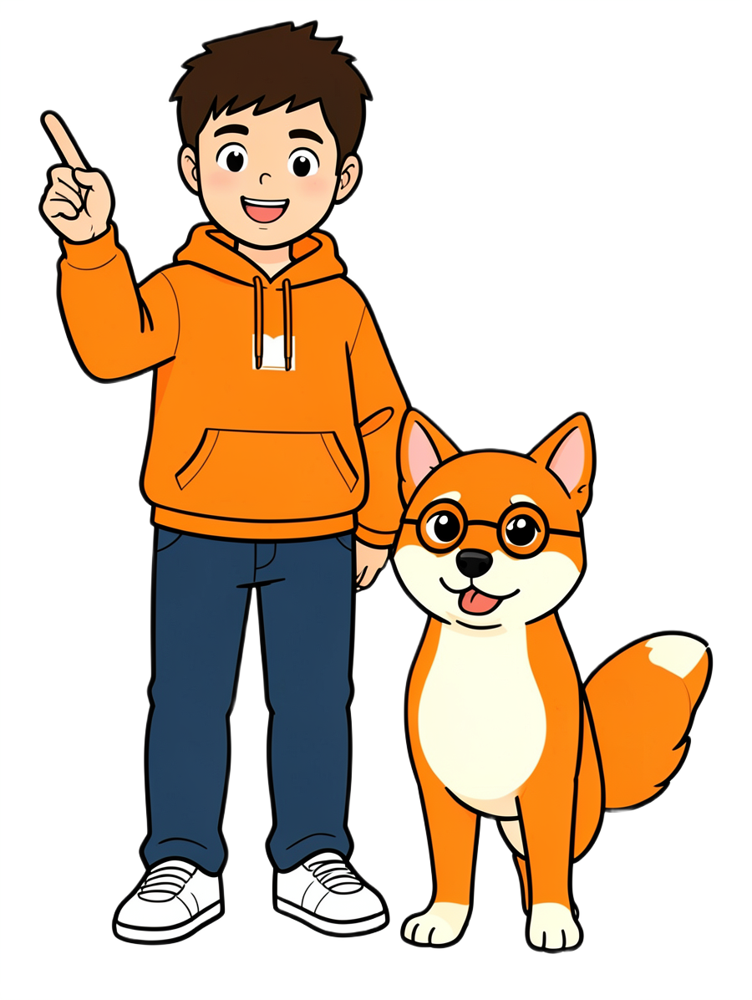
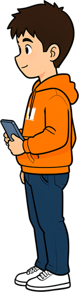

Vladislav Balesnyi
Chi fa cosa?
Grammatica italiana per la 2ª media
Ripasso grammaticale e analisi logica
Ripasso grammaticale e analisi logica

Vlad Editore · ScuolaTaormina – Trappitello
Ripasso grammaticale e analisi logica

Chi fa cosa? · Grammatica italiana per la 2ª media
di Vladislav Balesnyi
Prima edizione: 2026
© 2026 Vladislav Balesnyi · Vlad Editore, Taormina – Trappitello (ME)
Tutti i diritti riservati.
Questo libro è gratuito. Si può stampare e usare in classe; non si può vendere.
Contenuti digitali: esercizi interattivi, audio e video su vladinc.ru/libri. Ogni esercizio ha un codice (per esempio CFC-1) e un QR code. Le soluzioni sono nell'area riservata ai prof.
Come è stato fatto questo libro. Testi, esempi ed esercizi sono stati scritti e controllati dall'autore con l'aiuto di strumenti di intelligenza artificiale. Le illustrazioni di Vlad e Luce sono state create con l'intelligenza artificiale (deAPI) partendo da foto vere; la voce di Luce negli audio è una voce artificiale.
Le regole seguono la grammatica italiana standard e le indicazioni nazionali per la scuola secondaria di primo grado. Se trovi un errore, scrivici dal sito: lo correggeremo nella prossima edizione.
Impaginazione: Vlad Editore · Caratteri: Inter
In una frase le parole sono come una squadra: c'è chi fa l'azione, chi la subisce, chi dice dove, quando, come. Questo libro ti aiuta a scoprire chi fa cosa.
Nella Parte 1 (blu) ripassiamo la grammatica: le parti del discorso, il nome, l'articolo, l'aggettivo, il pronome, il verbo e le parti invariabili. Nella Parte 2 (arancione) entriamo nell'analisi logica: soggetto, predicato e complementi.
Ogni capitolo comincia con una piccola storia di Vlad e Luce, spiega le regole una pagina alla volta, propone tanti esercizi (sul libro e sul sito) e finisce con la mappa, gli errori comuni e la verifica.
Non serve sapere tutto subito: sbagliare fa parte del gioco. L'importante è chiedersi sempre che lavoro fa questa parola?
Buon lavoro!
Vladislav
Grazie a tutti i professori e le professoresse che ogni giorno insegnano l'italiano con pazienza e passione. Questo libro è nato in classe, ascoltando le loro spiegazioni: è anche merito loro.

Ha 13 anni, una felpa arancione e un tablet sempre in mano. Gli piacciono le storie, i libri e… capire come funzionano le cose, anche le frasi. Quando Luce combina un pasticcio, Vlad spiega con calma la regola.
È la cagnolina di Vlad, una Shiba Inu con gli occhiali tondi. Parla (sì, parla!), è dolce, curiosa e un po' pasticciona: confonde le parole, fa domande strane e a volte… mangia la merenda di Vlad. I suoi errori sono gli stessi che facciamo tutti: per questo impariamo con lei.


La regola da sapere.
Un errore che si fa spesso.
Un modo veloce per riconoscere qualcosa.
Una curiosità sulla lingua.
● facile · ●● medio · ●●● difficile
Accanto a molti esercizi trovi un codice e un QR code: inquadralo o scrivi il codice sul sito per fare l'esercizio interattivo, con la correzione subito.
Il simbolo ♪ indica un audio, ▶ un video.
articolonomeaggettivopronomeverboavverbiopreposizionecongiunzioneinteriezione
L'indice cresce con il libro: ogni nuovo capitolo si aggiunge qui.